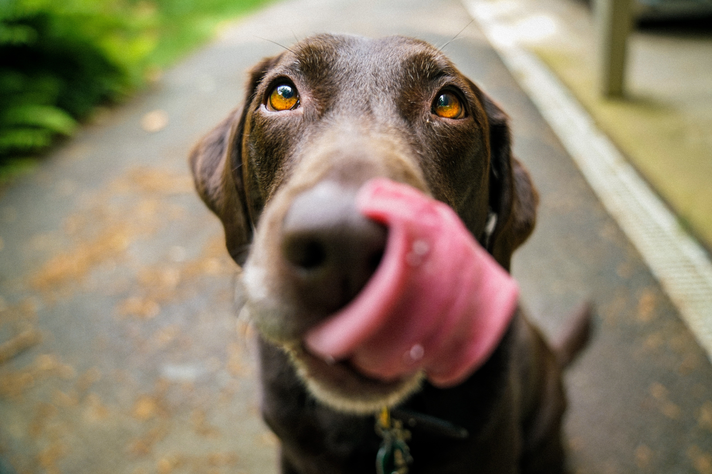

nutri peek
Cocina Natural para tu Mascota
Estamos en Cancún
Envios Sin Cargo
nutri peek
Cocina Natural para tu Mascota
Estamos en Cancún
Envios Sin Cargo
"¡Ahora mi perro salta de felicidad cuando le doy de comer!"
BENEFICIOS DE
LA DIETA NATURAL
#1
MEJORA LA CALIDAD DE VIDA
¡Está comprobado! ¡Tu mejor amigo será más feliz!
La alimentación es un aspecto fundamental en la vida de tu mascota (junto con el cariño y
los paseos) Al cambiar la dieta por comida verdadera, sabrosa y apetitosa comprobarás
enseguida como mejora su calidad de vida y al mismo tiempo se fortalecerá tu vínculo con el.
¿Quieres comprobar como aumenta su felicidad?
#2
INGREDIENTES 100% NATURALES
Seleccionamos con cuidado y responsabilidad nuestros ingredientes. Balanceamos nuestras recetas
para cubrir con todos los
requerimientos nutricionales de nuestras queridas mascotas.
Usamos carnes y verduras frescas
ricas en nutrientes. No agregamos ningun tipo de conservante, saborizante, ni colorantes
artificiales.
Incluso tu puedes probar nuestras comidas. ¡Nosotros lo hacemos todo
el
tiempo!
#3
ES LA MEJOR ALIMENTACIÓN
Es más sano, es más seguro. Es la mejor alimentación que puedes ofrecerle.
Entre las
principales ventajas para su salud podemos destacar,
una mejora en su digestión, además la alimentación natural refuerza su sistema
inmune, aumenta la hidratación,
mejora su condición física y estado emocional.
Pues claro... ¡Es comida de verdad!
Además, es muy seguro. La cocción de nuestros alimentos elimina bacterias y
parásitos peligrosos para la salud.
Nuestras recetas fueron elaboradas por nutricionistas y
aprobadas por veterinarios
#4
CUIDA TU ECONOMÍA
Alimentarse mejor no significa gastar más. Nuestras recetas tiene muy en cuenta la importancia de la economía hogareña y procuramos que nuestros productos ofrezcan la mejor relación calidad/precio del mercado, mejorando el precio por kilo de alimento de las principales marcas comerciales.
#5

PORCIONES LISTAS
Nuestras comidas vienen listas para servir. Sólo es necesario
descongelar el alimento unas horas antes, o simplemente, durante unos minutos en el
horno-microhondas.
Durante el tiempo de preparación del alimento, tu amiguito te acompañara feliz y ansioso por
disfrutar su deliciosa comida.
¡Sólo requiere unos pocos minutos diarios!
Conoce los errores más habituales en la alimentación de tu mascota
ASÍ TRABAJAMOS
PARA GARANTIZARTE LA MÁS ALTA CALIDAD
1
SELECCIONAMOS
Garantizar la máxima calidad de nuestros alimentos es una de nuestras prioridades. Seleccionamos cuidadosamente nuestros ingredientes frescos de proveedores con una reconocida trayectoria en calidad y seguridad.
2
ELABORAMOS
Con los ingredientes frescos recién llegados, nos ponemos manos a la obra. Balanceando los ingredientes, para cubrir con los requerimientos alimenticios de nuestras mascotas elaboramos nuestras recetas exclusivas. Todos nuestros alimentos son cocidos a su punto para eliminar los riesgos para la salud que acarrea la comida cruda.
3
CONTROL DE CALIDAD
Nuestro equipo de control de calidad, tanto humano como perruno degustará la receta. ¡Si es bueno para nosotros para nosotros, es bueno para ellos!
4
CONGELAMOS
Las recetas están listas, las porciones ya creadas, El alimento es congelado sin perder tiempo. De esta forma el alimento conserva toda su frescura y calidad. En pocos días será entregado a nuestros clientes
5
DISTRIBUIMOS
Llegamos al final de nuestro proceso. Llegó el momento de llevar el alimento a los hogares de nuestras mascotas. De nuestro congelador, al congelador de nuestros clientes